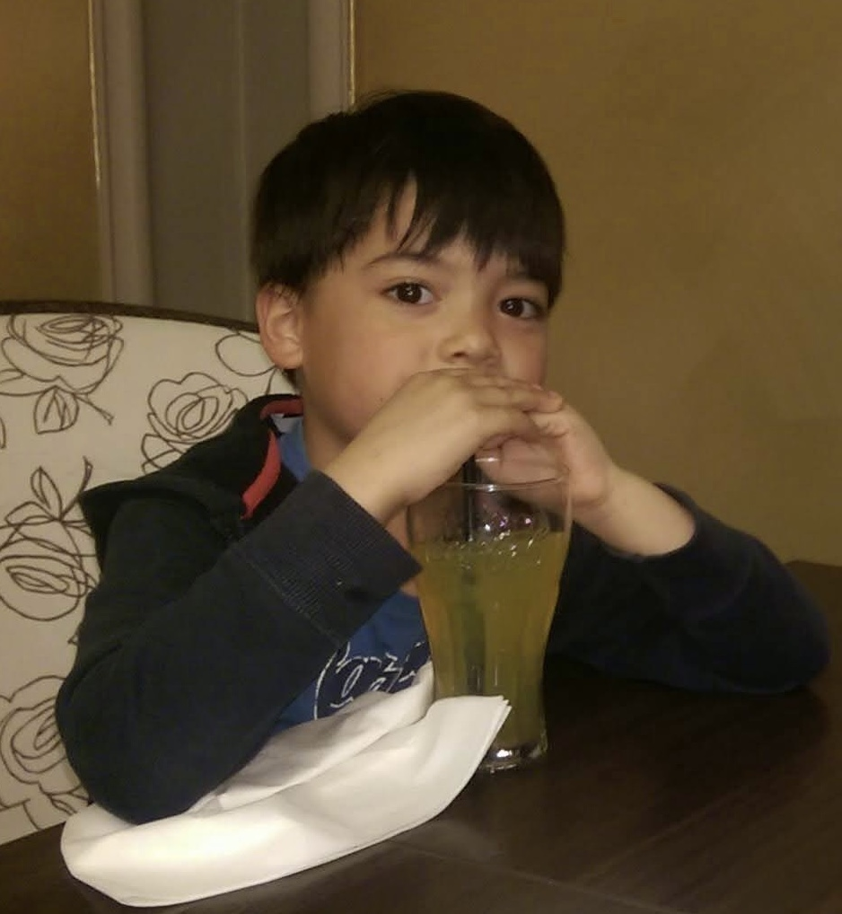
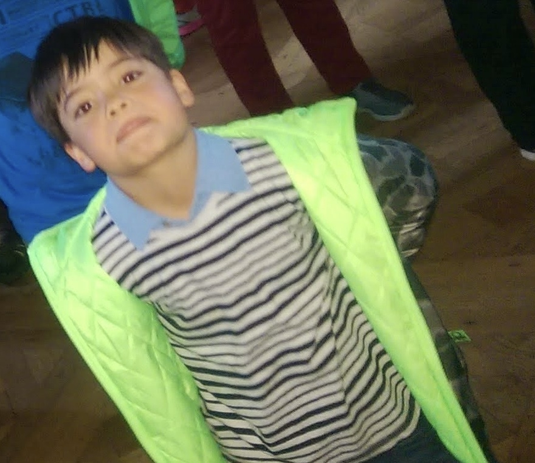

Welkom op mijn informaticawebsite! Hier vertel ik over verschillende onderwerpen uit de informatica.
Ik ben Mischa en ik zit in vwo 5. Deze website heb ik gemaakt voor het vak informatica. Op deze website laat ik zien wat ik over verschillende onderwerpen heb geleerd.
Ik vind het interessant om te ontdekken hoe computers werken en hoe technologie wordt gebruikt in het dagelijks leven. Bij informatica leer je niet alleen over computers, maar ook over de manier waarop informatie wordt opgeslagen en verwerkt.

Ik vind het belangrijk om nieuwe dingen te leren en mezelf te blijven ontwikkelen. Wanneer ik iets nog niet begrijp, probeer ik extra uitleg te zoeken en voorbeelden te bekijken. Zo kan ik stap voor stap beter begrijpen hoe iets werkt.
Met deze website wil ik laten zien wat ik tijdens informatica heb geleerd. Ik heb verschillende pagina's gemaakt waarop onderwerpen worden uitgelegd met voorbeelden, afbeeldingen en video's.
Tijdens het maken van de website leer ik ook hoe HTML en CSS werken. HTML gebruik je voor de inhoud van een pagina en CSS voor de opmaak, zoals kleuren, lettertypes en menu's.

Mijn doel is om meer te leren over informatica en beter te begrijpen hoe digitale technologie werkt. Ook wil ik leren hoe ik zelf een duidelijke en goed werkende website kan maken.